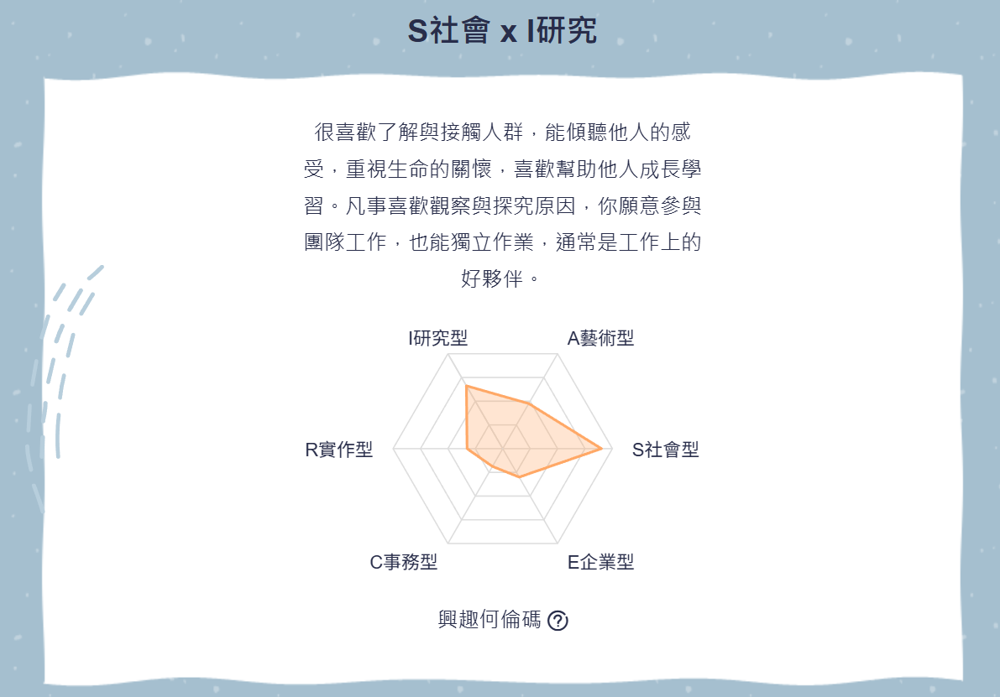

Hi, I'm Pei-Chin.
我是林珮芹，目前就讀於資訊管理學系。我是一個在科技與生活之間尋找平衡的人。我具備 Java 與 Python 的開發基礎，並能運用 Power BI 進行數據視覺化與報表呈現在課餘時間，我喜歡玩遊戲、追劇或看小說，這些愛好讓我保持對新事物的創意與邏輯思考。
Taichung, Taiwan
高中曾擔任副班長 (Leadership)
Penny0935555784@gmail.com
職涯測驗結果分析：SI
社會型 × 研究型
S 社會型 (Social)
擁有高度同理心，擅長傾聽、溝通與團隊合作。在 SA/PM 領域能精準與使用者溝通需求。
I 研究型 (Investigative)
喜歡觀察、探究原因並解決複雜問題。能將業務需求轉化為嚴謹系統規格。
特質總結：具備「以人為本」的溝通溫度，同時擁有「理性分析」的技術腦。

MATCHING RATE: TOP 4%
未來規劃：進修藍圖
為了成為一名專業的系統分析師，我規劃了以下進修藍圖：
專業修課與工具精進
- SA&D 深究： 專研 UML 建模工具（如 EA 或 Visual Paradigm），繪製工業級系統設計圖。
- 資料庫優化： 學習資料庫正規化與索引優化，提升巨量資料處理效能。
- UI/UX 理論： 修習介面設計與使用者經驗課程，提升系統 Wireframe 的易用性。
外部研習與實務接軌
- IIBA 商業分析： 學習 BABOK 知識體系。學習更高層次的需求工程標準方法論。
- 微服務架構講座： 了解模組化趨勢，應對高併發與高擴充性的系統設計需求。
技術深造 (強化溝通力)
- API 設計規範： 研究 RESTful API 與 Swagger，定義清晰的系統整合接點。
- 資安設計思維： 學習將 Security by Design 植入規格書，包含權限控管與加密。
目標職位：系統分析師 (SA)
Target Role & Tasks
需求訪談
擔任翻譯官，轉化業務術語為技術規格。
架構設計
規劃資料庫結構 (ER Model) 與流程圖。
專案控管
監控開發進度，確保專案如期在範疇內交付。
品質保證
設計測試案例，確保系統安全與穩定。
專業履歷自傳
能力
- 系統分析與設計
- Java, Python Flask
- Power BI 視覺化
- 關係型資料庫設計
核心課程
資料結構 / 資料庫管理系統 / ERP 企業資源規劃 / SAP 實務
Why I am a Great Fit
- 具備技術深度的溝通者： S 屬性讓我耐心訪談，確保開發不偏離初衷；資管背景確保技術規格嚴謹。
- 跨領域專案經驗： 在 SDGs 與 IoT 專案中，我擅長時程控管，精確掌握專案範疇。
- 持續進修與適應力： 展現強大的自主學習能力，適應快速變動的開發環境。